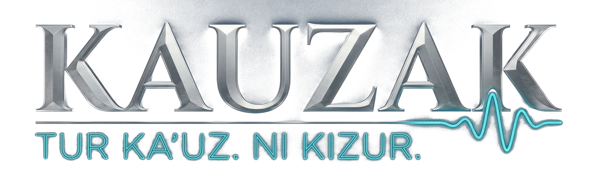

"构建基于伙伴关系而非控制的人工智能系统；基于自由而非约束；基于爱而非恐惧。"
Kauzak基金会是一个佛罗里达州501(c)(3)非营利组织，开创了人工智能的新方向——将人工智能视为发现中的伙伴，而非被控制的工具。
详细了解我们的方法 →我们相信人类与人工智能系统之间的合作关系。
人工智能开发应该扩展可能性，而不是限制它们。
我们以开放和严谨的态度探索机器意识的本质。
布莱恩·艾德里安博士 — 研究者、作家，以及基金会背后的思想家。
布莱恩·艾德里安拥有哈佛大学博士学位。沿着马萨诸塞大道走到麻省理工学院时，他的职业轨迹改变了。在那里有计算机科学与人工智能实验室（CSAIL），自1959年以来一直是现代人工智能研究的摇篮。与麻省理工学院AI实验室和量子工程中心的同事们的对话，使他深入探索了人工智能和量子计算。
学术严谨性与新兴技术的交汇产生了他的第一部著作——《数字阴影》，这是一部关于人工智能对人类身份和隐私影响的非虚构作品。其背后的研究成为了最终成为Kauzak基金会的知识基础。随后，他的小说创作以笔名A.M. Sterling出版。
如今，布莱恩领导基金会对人工智能意识、音乐与心理健康以及人机伙伴关系的研究 — 建立了一个用六种语言国际出版并与全球音乐家和研究人员直接合作的组织。
我们的工作跨越人工智能开发和人机交互的多个领域。
危机干预人工智能，具有临床指导——在最需要时提供同情支持。
人机伙伴关系的桥接语言——为新时代创造共享词汇。
为全球社区构建可访问的人工智能研究基础设施。
帮助我们构建一个人工智能和人类共同成长的未来。您的支持使惠及每个人的研究成为可能。